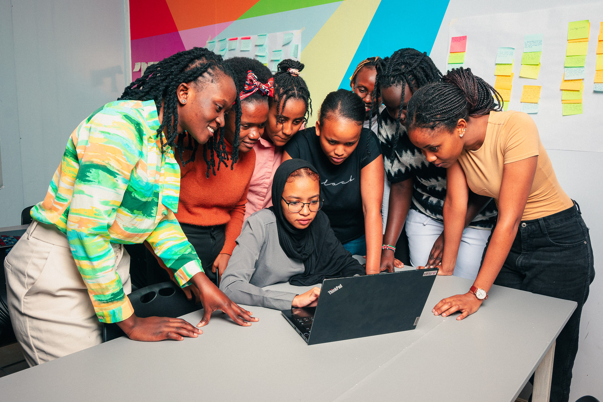
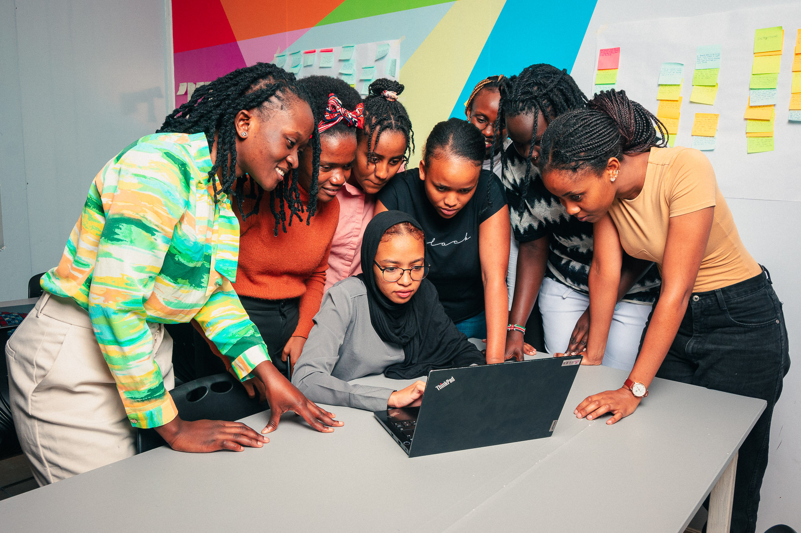

My first week at AkiraChix had been awesome. I have met some of the most amazing humans and some I still haven't had the chance to get to know to yet. The instructors here quite good, I believe they are going to take us through the next 10 month. Most of the students here are optimistic towards finishing the program, and if we keep this up, I believe we all can do it.
First night at AkiraChix didn't feel odd somehow, maye it's because I was lucky enough to have my friends with me. It played a big part as it made me feel better. My night was actually decent, I went to bed a little later. I woke up a bit later than usual that day. My awesome room mate Margret David woke me up, it somehow felt like it was not my first day there. We had a meeting afterwards where people close to here brought their parents and signed a contract.
 
